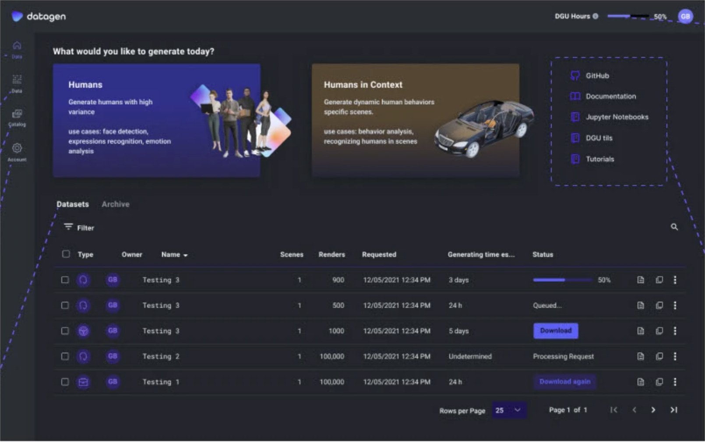

Start something new, or check on what’s cooking
- “What would you like to generate today?”The two main products (Humans, and Humans in Context) are the first thing you see, each with its use cases.
- Datasets tableThe status of your latest data requests, from queued to ready to download. Generation can take days, so status is front and center.
- DGU hours bankTells you how much data you can still generate.
- Additional materialsGitHub, documentation, Jupyter notebooks and tutorials, for people who want to go deeper or are on their way to the SDK.
